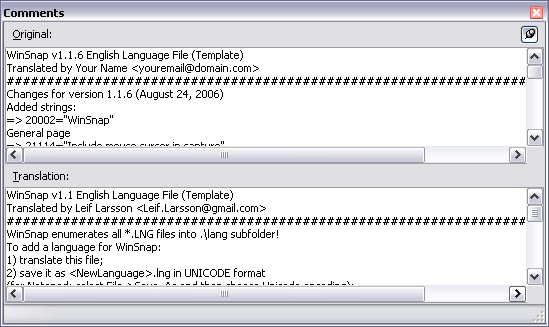

The comments dialog displays any available comments at the currently selected line. Logically, comments are grouped with the Name/Value following it. Comments are shown both for the original file and the translation file:

You can "attach" the comment window to the main window by clicking the thumb-tack button. When attached, the comment window follows the main window when it is moved.
Starting with version 1.7, translation comments can be also be edited.